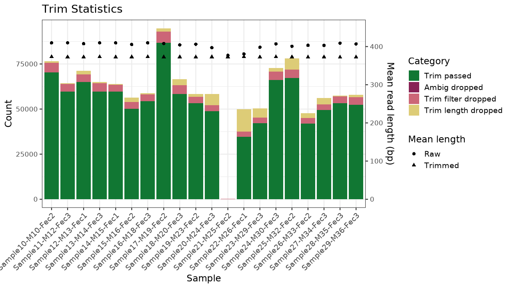

Amplicon sequencing processing
Generated by: George Chlipala
Report date: December 18, 2024
Overview
When you publish manuscripts based on data generated at our facility, we would greatly appreciate an acknowledgement of our efforts. Please cite our facility as follows (for example):
Basic processing of the raw data were performed by the University of Illinois at Chicago Research Informatics Core (UICRIC).
We adhere to a general policy for acknowledgements and authorship as established by the Association for Biomolecular Resource Facilities (ABRF) , and we support the following statement from the ABRF.
The existence of core facilities depends in part on proper acknowledgment in publications. This is an important metric of the value of most core facilities. Proper acknowledgment of core facilities enables them to obtain financial and other support so that they may continue to provide their essential services in the best ways possible. It also helps core personnel to advance in their careers, adding to the overall health of the core facility.
Please contact us for assistance in drafting manuscripts.
- This report provides a high-level summary of the basic bioinformatic analysis included with the amplicon sequencing services provided by the UIC Research Resources Center (RRC). The end result of these bioinformatics services is to provide investigators basic information concerning the abundance of taxa present in the samples. The basic bioinformatic analysis includes basic processing of raw sequence data including read merging, adapter & quality trimming, chimeric checking and processing using DADA2 to generate a table of abundance data and associated taxonomic annotations.
- There were 20 samples in this project.
| File | Description | Type |
|---|---|---|
| rep_set_tax_assignments.txt | Taxonomic assignment of master sequences | result |
| taxa_raw_counts.zip | ZIP archive of taxonomic summaries from phylum to species level result - raw sequence counts | result |
| taxa_raw_counts.xlsx | Excel spreadsheet of taxonomic summaries from phylum to species level result - raw sequence counts | result |
| taxa_relative.zip | ZIP archive of taxonomic summaries from phylum to species level result - relative sequence abundance | result |
| taxa_relative.xlsx | Excel spreadsheet of taxonomic summaries from phylum to species level result - raw sequence counts | result |
| biom-summary.txt | Summary statistics of ASV table | result |
| taxa_table.biom | Amplicon Sequence Variant (ASV) table, in BIOM format | result |
| sequences.zip | ZIP archive of sequences for each sample, after merging, trimming and chimera checking | result |
| rep_set_sequences.zip | Compressed FASTA file of representative sequences for ASVs | result |
| Sample | OriginalID |
|---|---|
| Sample10-M10-Fec2 | Sample10-M10-Fec2 |
| Sample11-M12-Fec3 | Sample11-M12-Fec3 |
| Sample12-M13-Fec1 | Sample12-M13-Fec1 |
| Sample13-M14-Fec3 | Sample13-M14-Fec3 |
| Sample14-M15-Fec1 | Sample14-M15-Fec1 |
| Sample15-M16-Fec2 | Sample15-M16-Fec2 |
| Sample16-M18-Fec3 | Sample16-M18-Fec3 |
| Sample17-M19-Fec2 | Sample17-M19-Fec2 |
| Sample18-M20-Fec3 | Sample18-M20-Fec3 |
| Sample19-M23-Fec2 | Sample19-M23-Fec2 |
| Sample20-M24-Fec3 | Sample20-M24-Fec3 |
| Sample21-M25-Fec2 | Sample21-M25-Fec2 |
| Sample22-M26-Fec1 | Sample22-M26-Fec1 |
| Sample23-M29-Fec3 | Sample23-M29-Fec3 |
| Sample24-M30-Fec3 | Sample24-M30-Fec3 |
| Sample25-M32-Fec2 | Sample25-M32-Fec2 |
| Sample26-M33-Fec2 | Sample26-M33-Fec2 |
| Sample27-M34-Fec3 | Sample27-M34-Fec3 |
| Sample28-M35-Fec3 | Sample28-M35-Fec3 |
| Sample29-M36-Fec3 | Sample29-M36-Fec3 |
- Method: PearJiajie Zhang, Kassian Kobert, Tom Flouri, and Alexandros Stamatakis. (2014) Pear: a fast and accurate illumina paired-end read merger. Bioinformatics, 30(5):614-620 (version: v0.9.11)
-
Forward and reverse reads were merged using PEAR.
Figure 1 . Merging results

Table 1 . Sequence merging statistics
| Sample | Assembled reads | Discarded reads | Not assembled reads | Percent passed |
|---|---|---|---|---|
| Sample10-M10-Fec2 | 76474 | 0 | 1415 | 98.18% |
| Sample11-M12-Fec3 | 64322 | 2 | 777 | 98.80% |
| Sample12-M13-Fec1 | 71175 | 2 | 2984 | 95.97% |
| Sample13-M14-Fec3 | 64928 | 0 | 1052 | 98.41% |
| Sample14-M15-Fec1 | 63916 | 0 | 1485 | 97.73% |
| Sample15-M16-Fec2 | 56417 | 0 | 3556 | 94.07% |
| Sample16-M18-Fec3 | 58822 | 0 | 1372 | 97.72% |
| Sample17-M19-Fec2 | 94815 | 0 | 2222 | 97.71% |
| Sample18-M20-Fec3 | 66613 | 0 | 4437 | 93.76% |
| Sample19-M23-Fec2 | 58394 | 0 | 1613 | 97.31% |
| Sample20-M24-Fec3 | 58382 | 0 | 5214 | 91.80% |
| Sample21-M25-Fec2 | 203 | 0 | 11 | 94.86% |
| Sample22-M26-Fec1 | 49922 | 4 | 10627 | 82.44% |
| Sample23-M29-Fec3 | 50389 | 0 | 5304 | 90.48% |
| Sample24-M30-Fec3 | 72858 | 0 | 2391 | 96.82% |
| Sample25-M32-Fec2 | 78046 | 0 | 7113 | 91.65% |
| Sample26-M33-Fec2 | 47643 | 2 | 3398 | 93.34% |
| Sample27-M34-Fec3 | 56241 | 0 | 5758 | 90.71% |
| Sample28-M35-Fec3 | 57480 | 4 | 1128 | 98.07% |
| Sample29-M36-Fec3 | 58008 | 0 | 2808 | 95.38% |
- Method: cutadaptMartin, M. (2011). Cutadapt removes adapter sequences from high-throughput sequencing reads. EMBnet.journal, 17(1):10-12. doi:https://doi.org/10.14806/ej.17.1.200 (version: 4.4)
-
Custom ParametersSequencing trimming using cutadapt - -a = ^GTGCCAGCMGCCGCGGTAA...AAACTYAAAKRAATTGRCGG$
- --trim-n
- --max-n = 0
- -q = 20
- -m = 300
- --trimmed-only
- -e = 0.10
- --report = minimal
- Method: Quality trimming
-
Custom ParametersQuality trimming based on quality threshold and length parameters. - min length = 300
- p = 20
- Method: Adapter trimming
-
Custom ParametersAdapter/primer sequences were trimmed from the reads. - 5' adapter = GTGCCAGCMGCCGCGGTAA
- 3' adapter = AAACTYAAAKRAATTGRCGG
- Method: Adapter filter
-
Reads that lack the adpater/primer sequences were discarded. - Method: Abiguous nucleotide trimming
-
Custom ParametersAmbiguous nucleotides (N) were trimmed from the ends and reads with internal ambiguous nucleotides were discarded. - max-n = 0
- 
Figure 1 . Trimming results
Table 1 . Trimming statistics
| Sample | Trim passed | Ambig dropped | Trim filter dropped | Trim length dropped | Percent passed | Mean Length | Mean Trimmed Length | Quality trimmed bp |
|---|---|---|---|---|---|---|---|---|
| Sample10-M10-Fec2 | 70366 | 6 | 5239 | 863 | 92.01% | 409.8 | 373.2 | 609 |
| Sample11-M12-Fec3 | 59791 | 7 | 4073 | 451 | 92.96% | 409.8 | 372.8 | 611 |
| Sample12-M13-Fec1 | 64900 | 5 | 4370 | 1900 | 91.18% | 407.5 | 372.6 | 739 |
| Sample13-M14-Fec3 | 59719 | 4 | 4661 | 544 | 91.98% | 409.8 | 373.0 | 772 |
| Sample14-M15-Fec1 | 59675 | 4 | 3726 | 511 | 93.36% | 409.7 | 372.5 | 374 |
| Sample15-M16-Fec2 | 50088 | 4 | 3881 | 2444 | 88.78% | 405.4 | 372.9 | 448 |
| Sample16-M18-Fec3 | 54461 | 7 | 3722 | 632 | 92.59% | 409.8 | 373.0 | 926 |
| Sample17-M19-Fec2 | 86736 | 7 | 6180 | 1892 | 91.48% | 408.0 | 372.5 | 361 |
| Sample18-M20-Fec3 | 58293 | 6 | 4975 | 3339 | 87.51% | 404.2 | 372.8 | 1033 |
| Sample19-M23-Fec2 | 53160 | 4 | 3624 | 1606 | 91.04% | 406.2 | 372.5 | 418 |
| Sample20-M24-Fec3 | 48723 | 5 | 3407 | 6247 | 83.46% | 396.9 | 372.9 | 264 |
| Sample21-M25-Fec2 | 70 | 0 | 120 | 13 | 34.48% | 377.1 | 372.7 | 0 |
| Sample22-M26-Fec1 | 34717 | 1 | 2758 | 12446 | 69.54% | 380.7 | 373.0 | 725 |
| Sample23-M29-Fec3 | 42059 | 6 | 3170 | 5154 | 83.47% | 398.1 | 372.5 | 731 |
| Sample24-M30-Fec3 | 66054 | 0 | 4639 | 2165 | 90.66% | 407.1 | 373.0 | 473 |
| Sample25-M32-Fec2 | 67218 | 9 | 4671 | 6148 | 86.13% | 400.8 | 372.8 | 945 |
| Sample26-M33-Fec2 | 41972 | 1 | 3099 | 2571 | 88.10% | 403.2 | 372.2 | 783 |
| Sample27-M34-Fec3 | 49421 | 10 | 3255 | 3555 | 87.87% | 403.1 | 372.7 | 384 |
| Sample28-M35-Fec3 | 53160 | 2 | 3880 | 438 | 92.48% | 408.9 | 372.1 | 907 |
| Sample29-M36-Fec3 | 52292 | 6 | 4317 | 1393 | 90.15% | 407.0 | 372.5 | 878 |
- Method: VSEARCH reference basedRognes T, Flouri T, Nichols B, Quince C, Mah F. (2016) VSEARCH: a versatile open source tool for metagenomics. PeerJ 4:e2584. doi: 10.7717/peerj.2584 (version: v2.25.0)
-
Chimeric sequences were identified using the VSEARCH algorithm as compared with a reference database.
Figure 1 . Chimera checking results

Table 1 . Chimera checking statistics
| Sample | Non-chimeras | Chimeras | Percent passed |
|---|---|---|---|
| Sample10-M10-Fec2 | 64552 | 5814 | 84.41% |
| Sample11-M12-Fec3 | 54789 | 5002 | 85.18% |
| Sample12-M13-Fec1 | 59871 | 5029 | 84.12% |
| Sample13-M14-Fec3 | 55345 | 4374 | 85.24% |
| Sample14-M15-Fec1 | 55016 | 4659 | 86.08% |
| Sample15-M16-Fec2 | 45815 | 4273 | 81.21% |
| Sample16-M18-Fec3 | 49969 | 4492 | 84.95% |
| Sample17-M19-Fec2 | 79599 | 7137 | 83.95% |
| Sample18-M20-Fec3 | 53433 | 4860 | 80.21% |
| Sample19-M23-Fec2 | 49256 | 3904 | 84.35% |
| Sample20-M24-Fec3 | 45206 | 3517 | 77.43% |
| Sample21-M25-Fec2 | 64 | 6 | 31.53% |
| Sample22-M26-Fec1 | 32454 | 2263 | 65.01% |
| Sample23-M29-Fec3 | 39398 | 2661 | 78.19% |
| Sample24-M30-Fec3 | 59564 | 6490 | 81.75% |
| Sample25-M32-Fec2 | 62442 | 4776 | 80.01% |
| Sample26-M33-Fec2 | 39424 | 2548 | 82.75% |
| Sample27-M34-Fec3 | 45957 | 3464 | 81.71% |
| Sample28-M35-Fec3 | 51176 | 1984 | 89.03% |
| Sample29-M36-Fec3 | 49230 | 3062 | 84.87% |
- Method: DADA2 amplicon denoisingCallahan BJ, McMurdie PJ, Rosen MJ, Han AW, Johnson AJA and Holmes SP (2016). DADA2: High-resolution sample inference from Illumina amplicon data. Nature Methods, 13:581-583. doi: 10.1038/nmeth.3869 (version: 1.30.0 )
-
Amplicon Sequence Variants (ASVs) were infered using DADA2.
Figure 1 . Comparison of observation and sequence counts in each sample
Figure 2 . Comparison of samples and sequence counts for ASVs/OTUs
Table 1 . Observation (ASV/OTU) and total sequence counts per sample
| Sample | Observations | Counts |
|---|---|---|
| Sample21.M25.Fec2 | 4 | 31 |
| Sample22.M26.Fec1 | 150 | 31815 |
| Sample23.M29.Fec3 | 153 | 38696 |
| Sample26.M33.Fec2 | 178 | 38762 |
| Sample20.M24.Fec3 | 180 | 44393 |
| Sample15.M16.Fec2 | 162 | 44921 |
| Sample19.M23.Fec2 | 190 | 48391 |
| Sample16.M18.Fec3 | 173 | 49095 |
| Sample18.M20.Fec3 | 185 | 52481 |
| Sample14.M15.Fec1 | 178 | 54356 |
| Sample13.M14.Fec3 | 170 | 54595 |
| Sample11.M12.Fec3 | 176 | 54085 |
| Sample12.M13.Fec1 | 170 | 58893 |
| Sample24.M30.Fec3 | 185 | 58840 |
| Sample25.M32.Fec2 | 199 | 61600 |
| Sample10.M10.Fec2 | 159 | 63532 |
| Sample17.M19.Fec2 | 191 | 78309 |
| Sample27.M34.Fec3 | 154 | 45315 |
| Sample28.M35.Fec3 | 180 | 50424 |
| Sample29.M36.Fec3 | 172 | 48267 |
- Method: Naive Bayseian classifierCallahan BJ, McMurdie PJ, Rosen MJ, Han AW, Johnson AJA and Holmes SP (2016). DADA2: High-resolution sample inference from Illumina amplicon data. Nature Methods, 13:581-583. doi: 10.1038/nmeth.3869Wang Q, Garrity GM, Tiedje JM, and Cole JR. (2007). Naive Bayesian classifier for rapid assignment of rRNA sequences into the new bacterial taxonomy. Applied and environmental microbiology, 73(16):5261-5267. doi:10.1128/AEM.00062-07 (version: dada2_taxa.R --version)
-
Taxonomic annotations were deteremined using a Naive Bayesian approach included in the DADA2 package.
Figure 1 . Summary of major level 2 taxa

Figure 2 . Summary of taxonomic annotation depth
Table 1 . Summary of major level 2 taxa
| Taxon | Counts | Percent |
|---|---|---|
| Bacteria;Bacillota | 534830 | 54.75% |
| Bacteria;Bacteroidota | 432499 | 44.28% |
| Bacteria;Deferribacterota | 8675 | < 1% |
| Bacteria;Pseudomonadota | 407 | < 1% |
| Bacteria;Actinomycetota | 390 | < 1% |
| Unassigned | 0 | 0% |
Table 2 . Summary of taxonomic annotation depth - Grouped by level 2 taxa
| Level 2 taxon | Level 5 raw counts | Level 6 raw counts | Level 7 raw counts | Level 5 relative counts | Level 6 relative counts | Level 7 relative counts |
|---|---|---|---|---|---|---|
| Bacillota | 17494 | 503151 | 14185 | 1.79% | 51.51% | 1.45% |
| Bacteroidota | 0 | 432499 | 0 | - | 44.28% | - |
| Deferribacterota | 0 | 0 | 8675 | - | - | < 1% |
| Pseudomonadota | 0 | 407 | 0 | - | < 1% | - |
| Actinomycetota | 0 | 390 | 0 | - | < 1% | - |
- Method: Taxonomic filter
-
Custom ParametersData are filtered to remove read counts associated with particular taxa - filter = c__Chloroplast,f__mitochondria,D_4__Mitochondria,D_3__Chloroplast,Chloroplast,Mitochondria,Synthetic_Rhodanobacter_Spike-In
- Method: Relative sequence abundance
-
Read counts were normalized as fraction of total sequence counts in each sample
Figure 1 . Filtering stats

Figure 2 . PCA plots of normalized data (relative sequence abundance)

Table 1 . Filtering stats
| Sample | Original | Filtered | Retained | Percent Retained |
|---|---|---|---|---|
| Sample10.M10.Fec2 | 63532 | 0 | 63532 | 100.00 % |
| Sample11.M12.Fec3 | 54085 | 0 | 54085 | 100.00 % |
| Sample12.M13.Fec1 | 58893 | 0 | 58893 | 100.00 % |
| Sample13.M14.Fec3 | 54595 | 0 | 54595 | 100.00 % |
| Sample14.M15.Fec1 | 54356 | 0 | 54356 | 100.00 % |
| Sample15.M16.Fec2 | 44921 | 0 | 44921 | 100.00 % |
| Sample16.M18.Fec3 | 49095 | 0 | 49095 | 100.00 % |
| Sample17.M19.Fec2 | 78309 | 0 | 78309 | 100.00 % |
| Sample18.M20.Fec3 | 52481 | 0 | 52481 | 100.00 % |
| Sample19.M23.Fec2 | 48391 | 2 | 48389 | 100.00 % |
| Sample20.M24.Fec3 | 44393 | 0 | 44393 | 100.00 % |
| Sample21.M25.Fec2 | 31 | 0 | 31 | 100.00 % |
| Sample22.M26.Fec1 | 31815 | 0 | 31815 | 100.00 % |
| Sample23.M29.Fec3 | 38696 | 0 | 38696 | 100.00 % |
| Sample24.M30.Fec3 | 58840 | 0 | 58840 | 100.00 % |
| Sample25.M32.Fec2 | 61600 | 0 | 61600 | 100.00 % |
| Sample26.M33.Fec2 | 38762 | 0 | 38762 | 100.00 % |
| Sample27.M34.Fec3 | 45315 | 0 | 45315 | 100.00 % |
| Sample28.M35.Fec3 | 50424 | 0 | 50424 | 100.00 % |
| Sample29.M36.Fec3 | 48267 | 0 | 48267 | 100.00 % |